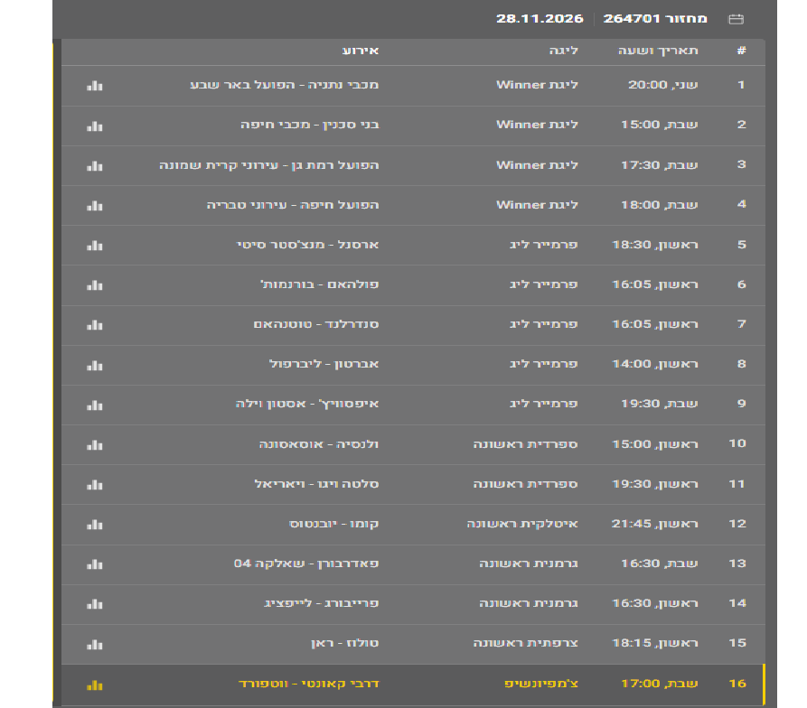

משחק 1
מכבי נתניה - הפועל באר שבע
באר שבע מגיעה בדרך כלל עם סגל עמוק יותר ויכולת גבוהה יותר ברוב העמדות. נתניה מסוגלת להקשות בבית, אך לאורך זמן היתרון האיכותי נוטה לצד האורחת.
ההמלצה : 2
משחק 2
בני סכנין - מכבי חיפה
חיפה עדיפה כמעט בכל פרמטר מקצועי ומחזיקה בסגל רחב ומנוסה יותר. אם תשמור על ריכוז, היא אמורה לקחת את מלוא הנקודות.
ההמלצה : 2
משחק 3
הפועל רמת גן - קרית שמונה
פערי הרמות והניסיון משחקים לטובת קרית שמונה. במשחקי גביע והכרעה יש לה בדרך כלל יתרון באיכות הסגל.
ההמלצה : 2
משחק 4
הפועל חיפה - עירוני טבריה
להפועל חיפה יתרון ביתיות וניסיון בליגה הבכירה. טבריה יכולה להיות יריבה עיקשת, אך המארחת נראית עדיפה.
ההמלצה : 1
משחק 5
ארסנל - מנצ'סטר סיטי
מפגש צמרת קלאסי בין שתי קבוצות מהחזקות באירופה. ארסנל חזקה מאוד בבית, אך סיטי מסוגלת להוציא נקודות מכל מגרש.
ההמלצה : 1X
משחק 6
פולהאם - בורנמות'
שתי קבוצות ברמה דומה יחסית ולכן קשה לזהות פייבוריט ברור. הביתיות מעניקה יתרון קל לפולהאם אך תיקו בהחלט בא בחשבון.
ההמלצה : 1X
משחק 7
סנדרלנד - טוטנהאם
לטוטנהאם יתרון משמעותי באיכות ובהתקפה. אם תשחק ברמתה הרגילה היא אמורה לנצח.
ההמלצה : 2
משחק 8
אברטון - ליברפול
למרות שמדובר בדרבי טעון, לליברפול איכות גבוהה יותר כמעט בכל עמדה. משחקים כאלה לעיתים צמודים, אך היתרון עדיין אצל האורחת.
ההמלצה : 2
משחק 9
איפסוויץ' - אסטון וילה
אסטון וילה מציגה בדרך כלל כדורגל איכותי יותר ומחזיקה בסגל עמוק יותר. איפסוויץ' תילחם, אך הנטייה היא לניצחון חוץ.
ההמלצה : 2
משחק 10
ולנסיה - אוסאסונה
ולנסיה נהנית מיתרון ביתיות וממגרש ביתי לא פשוט ליריבות. אוסאסונה תחרותית, אך המארחת מקבלת עדיפות.
ההמלצה : 1
משחק 11
סלטה ויגו - ויאריאל
זהו אחד המשחקים המאוזנים במחזור. ויאריאל מעט איכותית יותר על הנייר, אך לסלטה יש יתרון ביתיות ולכן הכיסוי המתבקש כולל גם תיקו.
ההמלצה : X2
משחק 12
קומו - יובנטוס
יובנטוס עדיפה משמעותית מבחינת איכות, ניסיון ועומק סגל. איבוד נקודות כאן ייחשב הפתעה.
ההמלצה : 2
משחק 13
פאדרבורן - שאלקה 04
פאדרבורן נראית יציבה יותר במפגש הזה ומקבלת גם את יתרון הבית. שאלקה עדיין מסוגלת להפתיע אך אינה הבחירה המועדפת.
ההמלצה : 1
משחק 14
פרייבורג - לייפציג
לייפציג איכותית יותר, אך משחקי החוץ מול פרייבורג נוטים להיות מורכבים. לכן כדאי לכסות גם אפשרות של תיקו.
ההמלצה : X2
משחק 15
טולוז - ראן
טולוז קבוצה ביתית לא פשוטה וראן נוטה לחוסר יציבות במשחקים מסוימים. בשל האיזון היחסי, גם תיקו הוא תרחיש סביר.
ההמלצה : 1X
משחק 16
דרבי קאונטי - ווטפורד
המשחק נראה שקול למדי והביתיות עשויה להיות גורם משמעותי. לכן הבחירה היא נטייה למארחת עם גיבוי לתיקו.
ההמלצה : 1X

אהבתם? אל תפספסו את הבא!
⟵
🔔 Subscribe
🔔 להצטרפות
⟶